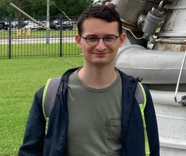

Me at the NASA Space Center
Alexis Le Glaunec
Ph.D. Student
Computer Science
Rice University
Address: 3112 Duncan Hall
E-mail: afl5[at]rice[dot]edu
About Me
I am a second-year Ph.D. student at the Department of Computer Science of Rice University advised by Konstantinos Mamouras (starting from Fall 2021). I received my Master's degree in Computer Science from Institut Polytechnique de Paris and was a student of Telecom SudParis Engineering School.
Research Interests
My research aims to provide better abstraction and implementation of systems for data streams and IoT applications. I am currently working on more efficient streaming algorithms for pattern matching that can run on GPU hardware. I am also interested in temporal logic for the runtime verification of cyber-physical systems.
Publications
| OOPSLA' 23 | Regular Expression Matching Using Bit Vector Automata
[pdf]
Alexis Le Glaunec, Konstantinos Mamouras, and Lingkun Kong. |
|---|---|
| PLDI' 22 | Software-Hardware Codesign for Efficient In-Memory Regular Pattern Matching
[pdf]
[video]
[code]
Lingkun Kong, Qixuan Yu, Agnishom Chattopadhyay, Alexis Le Glaunec, Yi Huang, Konstantinos Mamouras, and Kaiyuan Yang. |
New Projects
Temporal Logic Monitoring
We have designed very efficient online monitors for Metric Temporal Logic thanks to a new algorithm for sliding windows. Right now, I am implementing my own falsification tool: given a simulated system, it explores the search space to find initial conditions + input signal that would falsify a property expressed in temporal logic. Our end goal is to take advantage of our new monitors to greatly improve over the state-of-the-art falsification tools.
Static Analysis for Memory-Efficient Matching
(Submitted for review at PLDI'23)Follow-up of our work on efficient matching regexes of the form r{m,n}, we refined the notion of counter-ambiguity from our PLDI'22 publication to come up with the more fine-grain sparseness. We developed a static analysis that allows for great memory savings for this class of regexes. We also improved the performance of both the counter-ambiguity and sparseness analysis, that can now run in minutes over entire datasets versus hours before.
Teaching Assistant
- IoT Programming and Data Analysis (Spring 2023)
- Logic in Computer Science and Artificial Intelligence (Fall 2022)
Assisted Moshe Y. Vardi and gave a lecture.
Mentoring
I am currently mentoring a Houston High School student, guiding her to create an embedded heart-rate monitor using a Domain-Specific Query Language for stream processing.